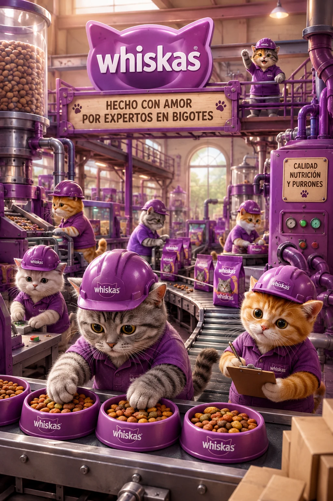
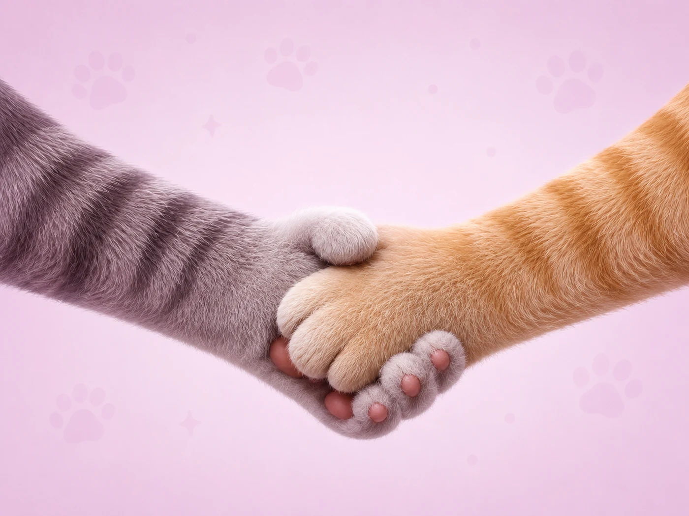
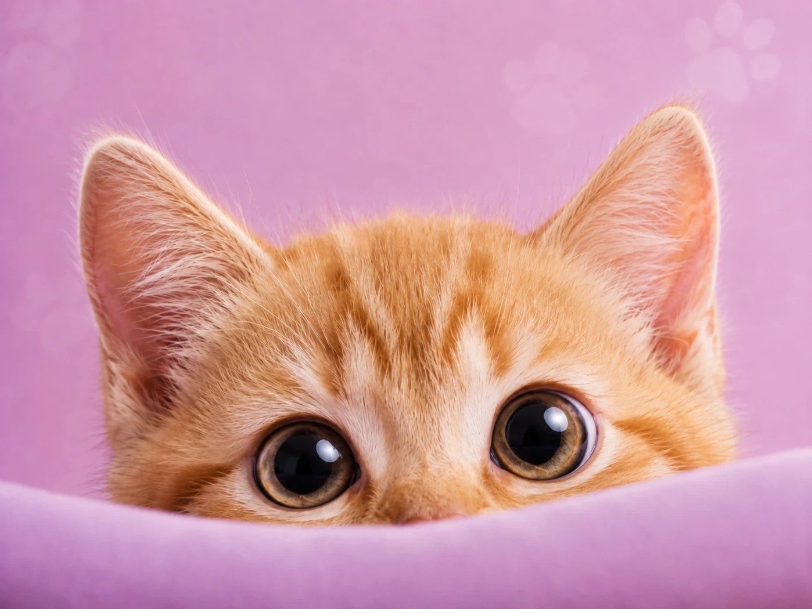

Desde 1958
Whiskas nació con una sola convicción: que cada gato merece una alimentación pensada especialmente para él.

Whiskas comenzó en el Reino Unido con la idea de que los gatos son parte de la familia y merecen una nutrición real. Con el tiempo se convirtió en la marca de alimento felino más reconocida del mundo, presente en más de 80 países.
Hoy, cada producto Whiskas es el resultado de décadas de investigación científica y del amor genuino por los felinos.

Alimentar a cada gato con productos que cuidan su salud, respetan su naturaleza y hacen más feliz la vida junto a él. Cada receta es desarrollada por nutricionistas especializados en felinos.

Un mundo donde ningún gato pase hambre y donde la relación entre las personas y sus mascotas sea cada vez más profunda, sana y llena de momentos compartidos.
Cada fórmula está respaldada por investigación nutricional de vanguardia.
Amamos a los gatos tanto como vos. Eso se nota en cada producto que hacemos.
Trabajamos para reducir nuestro impacto ambiental en cada etapa de producción.
Más de seis décadas avalan la calidad que ponemos en cada bolsa y sobre.